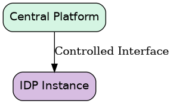

Secure Internal Developer Platform
Overview
This project is the design and development of a Secure Internal Developer Platform (IDP) for creating and managing isolated development environments.
The platform is intended for organizations where multiple development departments need standardized environments for application development, testing, experimentation, and Proof-of-Concept (PoC) work.
The primary design objective is not simply to automate infrastructure provisioning. The platform is designed as a security-critical system where isolation, least privilege, reproducibility, controlled changes, and secure defaults are architectural requirements from the beginning.
The platform is designed to provide developers with self-service capabilities while keeping the underlying infrastructure and organizational boundaries tightly controlled.
The core idea is:
Centralized standards and governance, independently deployed and strongly isolated developer platforms.
What is this platform?
The platform is an Internal Developer Platform focused on development environments.
It provides developers with a controlled interface through which they can:
Create development environments
Start and stop environments
Destroy environments
Select approved environment templates
Create and use development networks
Configure permitted resources
Create and share templates
Connect environments to their existing source-control systems
Access standardized development tooling
View the status of their environments
The platform does not attempt to replace the organization’s existing Git, source-control, IDE, or development workflows.
Instead, it provides the infrastructure and environment layer around those workflows.
A developer should be able to continue using their existing:
GitHub
GitLab
Azure DevOps
IDE
Source-code repositories
Development workflow
while using the platform to obtain a standardized and controlled environment in which to run their software.
Problem Statement
Development departments often create their own environments independently.
This can result in:
Different operating systems and versions
Different development tools
Inconsistent configurations
Manually configured infrastructure
Inconsistent security controls
Difficult-to-reproduce environments
Excessive administrative privileges
Poor visibility
Environment drift
Difficult lifecycle management
Different security practices between departments
The purpose of this platform is to reduce this inconsistency without forcing every development team to use the exact same development workflow.
The platform standardizes the environment and infrastructure layer, while allowing developers to retain control over their application development process.
Relationship to Other Platforms
The Internal Developer Platform is not intended to own the organization’s entire technology infrastructure.
Instead, it sits between developers and several underlying platforms.
![digraph architecture {
rankdir=TB
fontname="Helvetica"
node [
shape=box
style="rounded,filled"
fontname="Helvetica"
]
edge [
fontname="Helvetica"
]
developers [
label="Developers",
fillcolor="#D5F5E3"
]
idp [
label="Internal Developer Platform\nSelf-Service\nEnvironments\nTemplates\nProjects\nLifecycle Management",
fillcolor="#D7BDE2"
]
infrastructure [
label="Infrastructure Platform\nCompute\nNetwork\nStorage\nVirtualization",
fillcolor="#F9E79F"
]
tooling [
label="Tooling Platform\nRegistry\nPackages\nCI/CD\nMonitoring",
fillcolor="#F9E79F"
]
identity [
label="Identity Platform\nSSO\nIAM\nRBAC\nIdentity",
fillcolor="#F9E79F"
]
developers -> idp [
label="Self-service"
]
idp -> infrastructure [
label="Infrastructure requests"
]
idp -> tooling [
label="Tooling integration"
]
idp -> identity [
label="Authentication /\nAuthorization"
]
}](../../../../_images/graphviz-1f76a498027cce653f7a75a63575178076a97ad9.png)
Relationship Between the Internal Developer Platform and Other Platforms
The IDP therefore acts primarily as an orchestration and developer experience layer.
It consumes capabilities provided by other platforms instead of taking ownership of everything itself.
Platform Boundaries
Clear ownership boundaries are an important part of the architecture.
Internal Developer Platform
The IDP owns:
Developer self-service
Development environments
Environment lifecycle
Environment templates
Template catalog
Developer-facing APIs
Environment configuration
Environment-level authorization
Integration with external development services
Platform-specific policies
Infrastructure Platform
The Infrastructure Platform owns:
Physical infrastructure
Compute
Virtualization
Storage
Core networking
Infrastructure capacity
Infrastructure lifecycle
The IDP consumes infrastructure through defined interfaces.
It should not need to understand the implementation details of the underlying infrastructure.
Tooling Platform
The Tooling Platform owns centrally provided development services such as:
Artifact repositories
Package repositories
Container registries
CI/CD infrastructure
Central logging
Monitoring
Other shared development services
The IDP integrates with these services rather than attempting to replace them.
Identity Platform
The Identity Platform provides:
Authentication
Identity lifecycle
Organizational identity
Single Sign-On
Identity federation
Enterprise authorization capabilities
The IDP uses these capabilities to implement its own resource-level authorization model.
Source Control
Source control remains owned by the organization’s existing Git platform.
The IDP may integrate with:
GitHub
GitLab
Azure DevOps
Other organizational source-control systems
However, source code and repositories are not owned by the IDP.
Purpose
The primary purpose of the platform is to provide:
Secure, reproducible, standardized and self-service development environments.
The platform should make it easy for developers to experiment without making it easy to accidentally compromise other environments.
A developer should be able to request:
Python Application Environment
and receive a complete environment containing the required infrastructure and approved configuration.
For example:
![digraph environment {
rankdir=TB
fontname="Helvetica"
node [
shape=box
style="rounded,filled"
fontname="Helvetica"
]
application [
label="Python Application",
fillcolor="#D5F5E3"
]
appvm [
label="Application VM",
fillcolor="#D7BDE2"
]
dbvm [
label="Database VM",
fillcolor="#D7BDE2"
]
network [
label="Private Network",
fillcolor="#F9E79F"
]
images [
label="Approved Base Images",
fillcolor="#F9E79F"
]
tooling [
label="Standard Tooling",
fillcolor="#F9E79F"
]
monitoring [
label="Monitoring",
fillcolor="#F9E79F"
]
baseline [
label="Security Baseline",
fillcolor="#F9E79F"
]
application -> appvm
application -> dbvm
appvm -> network
dbvm -> network
appvm -> images
dbvm -> images
appvm -> tooling
appvm -> monitoring
appvm -> baseline
dbvm -> baseline
}](../../../../_images/graphviz-5ee4dbf89481d3cde8149f198abaea96abd97d9a.png)
Example Development Environment
The developer should not need to manually configure the underlying infrastructure.
Multi-Department Architecture
A key requirement is that each development department receives an independently deployed and strongly isolated IDP instance.
The platform therefore does not rely solely on logical multi-tenancy inside one large shared IDP.
Instead:
![digraph architecture {
rankdir=TB
fontname="Helvetica"
node [
shape=box
style="rounded,filled"
fontname="Helvetica"
]
edge [
fontname="Helvetica"
]
central [
label="Central Platform\nStandards / Releases / Governance",
fillcolor="#D5F5E3"
]
idpa [
label="IDP-A\nDepartment A\nIsolated Resources",
fillcolor="#D7BDE2"
]
idpb [
label="IDP-B\nDepartment B\nIsolated Resources",
fillcolor="#D7BDE2"
]
idpc [
label="IDP-C\nDepartment C\nIsolated Resources",
fillcolor="#D7BDE2"
]
central -> idpa [
label="Controlled deployment"
]
central -> idpb [
label="Controlled deployment"
]
central -> idpc [
label="Controlled deployment"
]
}](../../../../_images/graphviz-0cb226b551bcf91b6ab3edec099d614311958897.png)
Isolated Internal Developer Platform Instances
Each IDP instance represents a distinct security boundary.
A compromise of one department’s IDP should not automatically provide access to another department’s IDP.
For example:
![digraph isolation {
rankdir=LR
fontname="Helvetica"
node [
shape=box
style="rounded,filled"
fontname="Helvetica"
]
developer [
label="Developer A",
fillcolor="#D5F5E3"
]
idpa [
label="IDP-A\nDepartment A",
fillcolor="#D7BDE2"
]
idpb [
label="IDP-B\nDepartment B",
fillcolor="#D7BDE2"
]
resources [
label="Department B\nResources",
fillcolor="#F9E79F"
]
developer -> idpa
idpa -> idpb [
label="DENY",
style=dashed
]
idpa -> resources [
label="DENY",
style=dashed
]
}](../../../../_images/graphviz-b678d163d354e613b82a09f5b1f553c3709df800.png)
Department Isolation
This follows the principle of blast-radius reduction.
Central Governance, Local Execution
The architecture deliberately separates central governance from local execution.
The central platform defines:
Security standards
Platform releases
Approved components
Security baselines
Official templates
Policies
Deployment mechanisms
Individual IDP instances provide:
Local developers
Local projects
Local environments
Local templates
Local resource allocation
Local environment lifecycle
This results in:
Centralized governance with decentralized execution.
A department can therefore have autonomy without becoming completely independent from the organization’s security and engineering standards.
![digraph governance {
rankdir=TB
fontname="Helvetica"
node [
shape=box
style="rounded,filled"
fontname="Helvetica"
]
central [
label="Central Governance\nSecurity Standards\nPolicies\nReleases\nOfficial Templates\nDeployment Definitions",
fillcolor="#D5F5E3"
]
idpa [
label="IDP-A\nLocal Execution",
fillcolor="#D7BDE2"
]
idpb [
label="IDP-B\nLocal Execution",
fillcolor="#D7BDE2"
]
idpc [
label="IDP-C\nLocal Execution",
fillcolor="#D7BDE2"
]
central -> idpa
central -> idpb
central -> idpc
}](../../../../_images/graphviz-36f8e99e71a9050affbcf41a5f77cd0a44015069.png)
Central Governance and Local Execution
Templates
Templates are a central part of the platform.
A template describes a standardized development environment.
Example:
name: cpp-development
version: 1.0
resources:
vms:
- name: development
cpu: 4
memory: 8192
network:
isolated: true
software:
compiler: approved
cmake: approved
debugger: approved
A developer can select:
Create Environment
Template:
[ C++ Development ]
Project:
[ MyProject ]
Site:
[ Department A ]
Create
The platform then translates the template into infrastructure and configuration.
Template Governance
Templates are treated as potentially untrusted input.
Developers may be allowed to create their own templates, but templates must pass appropriate controls before becoming broadly available.
A template lifecycle can be:
![digraph template_lifecycle {
rankdir=LR
fontname="Helvetica"
node [
shape=box
style="rounded,filled"
fontname="Helvetica"
]
draft [
label="Draft",
fillcolor="#D5F5E3"
]
validation [
label="Validation",
fillcolor="#F9E79F"
]
security [
label="Security Analysis",
fillcolor="#F9E79F"
]
review [
label="Review",
fillcolor="#F9E79F"
]
approved [
label="Approved",
fillcolor="#D7BDE2"
]
published [
label="Published",
fillcolor="#D7BDE2"
]
versioned [
label="Versioned",
fillcolor="#D5F5E3"
]
draft -> validation
validation -> security
security -> review
review -> approved
approved -> published
published -> versioned
}](../../../../_images/graphviz-9dfdf865f21472b51f4dad13824dd96357c8c287.png)
Template Lifecycle
Templates can have different scopes:
![digraph template_scope {
rankdir=TB
fontname="Helvetica"
node [
shape=box
style="rounded,filled"
fontname="Helvetica"
]
official [
label="Official\nOrganization-wide",
fillcolor="#D5F5E3"
]
department [
label="Department\nDepartment-specific",
fillcolor="#D7BDE2"
]
team [
label="Team\nTeam-specific",
fillcolor="#F9E79F"
]
private [
label="Private\nIndividual Developer",
fillcolor="#FADBD8"
]
official -> department
department -> team
team -> private
}](../../../../_images/graphviz-44bd938f01b10c3de0d5e06636cd8fefd838dcd4.png)
Template Scope
This allows experimentation while maintaining control over officially supported environments.
Golden Paths
The platform should provide predefined Golden Paths for common development scenarios.
For example:
Create Application
[ Python API ]
[ C++ Application ]
[ Web Application ]
[ Microservice ]
[ Database Application ]
[ Kubernetes POC ]
[ Empty Linux Environment ]
A Golden Path may automatically provide:
Approved base image
Standard tooling
Network configuration
Monitoring
Logging
Security configuration
Resource limits
Required policies
The goal is not to prevent developers from experimenting.
The goal is to make the secure and standardized option the easiest option.
Secure Systems Engineering Approach
Security is treated as a system property rather than a collection of security tools.
The development process follows a security-oriented systems engineering lifecycle:
![digraph lifecycle {
rankdir=TB
fontname="Helvetica"
node [
shape=box
style="rounded,filled"
fontname="Helvetica"
]
mission [
label="Mission / Purpose",
fillcolor="#D5F5E3"
]
stakeholder [
label="Stakeholder Requirements",
fillcolor="#D5F5E3"
]
objectives [
label="Security Objectives",
fillcolor="#D7BDE2"
]
assets [
label="Asset Identification",
fillcolor="#F9E79F"
]
boundaries [
label="Trust Boundaries",
fillcolor="#F9E79F"
]
threat [
label="Threat Modeling",
fillcolor="#F9E79F"
]
requirements [
label="Security Requirements",
fillcolor="#F9E79F"
]
architecture [
label="Architecture",
fillcolor="#D7BDE2"
]
controls [
label="Security Controls",
fillcolor="#D7BDE2"
]
implementation [
label="Implementation",
fillcolor="#D5F5E3"
]
verification [
label="Verification & Validation",
fillcolor="#D5F5E3"
]
deployment [
label="Deployment",
fillcolor="#D5F5E3"
]
monitoring [
label="Monitoring",
fillcolor="#F9E79F"
]
maintenance [
label="Maintenance",
fillcolor="#F9E79F"
]
reassessment [
label="Continuous Reassessment",
shape=ellipse,
fillcolor="#FADBD8"
]
mission -> stakeholder
stakeholder -> objectives
objectives -> assets
assets -> boundaries
boundaries -> threat
threat -> requirements
requirements -> architecture
architecture -> controls
controls -> implementation
implementation -> verification
verification -> deployment
deployment -> monitoring
monitoring -> maintenance
maintenance -> reassessment
reassessment -> objectives [
label="Reassess"
]
}](../../../../_images/graphviz-f6e252bb1f6739302861a3efa8bd5e77c7488b6b.png)
Secure Systems Engineering Lifecycle
Security decisions are therefore made before implementation wherever possible.
Security Objectives
The platform is designed around several primary security objectives.
Isolation
A developer or department must not be able to access resources outside its authorized security boundary.
Least Privilege
Users, services and automation receive only the permissions required to perform their functions.
Secure Defaults
New environments should be secure by default.
Reproducibility
Infrastructure and environments should be reproducible from version-controlled definitions.
Integrity
Only approved and verified platform components should be deployed.
Accountability
Security-relevant actions must be attributable to an authenticated identity.
Resilience
A compromise or failure of one development environment should have a limited impact on other environments.
Controlled Change
Changes to platform components, policies and official templates must follow a controlled lifecycle.
Threat Modeling
Threat modeling is performed before implementing major components.
Important threat scenarios include:
Compromised Developer Environment
![digraph threat {
rankdir=LR
fontname="Helvetica"
node [
shape=box
style="rounded,filled"
fontname="Helvetica"
]
vm [
label="Compromised VM",
fillcolor="#FADBD8"
]
idp [
label="IDP",
fillcolor="#D7BDE2"
]
authorization [
label="Authorization",
fillcolor="#F9E79F"
]
deny [
label="DENY",
shape=ellipse,
fillcolor="#FADBD8"
]
vm -> idp [
label="Attempt access"
]
idp -> authorization
authorization -> deny
}](../../../../_images/graphviz-363209618efca7203b74de755ec0ec1e33ed9a42.png)
Compromised Development Environment
A compromised development VM must not automatically become a trusted platform client.
Malicious Developer
A developer may attempt to:
Access another developer’s environment
Access another department
Escalate privileges
Create excessive infrastructure
Bypass network restrictions
Create unsafe templates
Access platform secrets
These scenarios are explicitly considered during architecture and testing.
Compromised IDP
If IDP-A is compromised:
![digraph compromised_idp {
rankdir=LR
fontname="Helvetica"
node [
shape=box
style="rounded,filled"
fontname="Helvetica"
]
idpa [
label="Compromised IDP-A",
fillcolor="#FADBD8"
]
idpb [
label="IDP-B",
fillcolor="#D7BDE2"
]
central [
label="Central Platform",
fillcolor="#D5F5E3"
]
idpa -> idpb [
label="DENY",
style=dashed
]
idpa -> central [
label="DENY",
style=dashed
]
}](../../../../_images/graphviz-0aa0de58d8cfddb1fde4f1381448d7ef09a37730.png)
Compromised IDP and Blast Radius
The architecture should minimize the privileges and connectivity available to the compromised instance.
Trust Boundaries
Important trust boundaries include:
![digraph boundaries {
rankdir=TB
fontname="Helvetica"
node [
shape=box
style="rounded,filled"
fontname="Helvetica"
]
developer [
label="Developer",
fillcolor="#D5F5E3"
]
idp [
label="Developer Platform",
fillcolor="#D7BDE2"
]
infrastructure [
label="Infrastructure Platform",
fillcolor="#F9E79F"
]
developer -> idp [
label="Trust Boundary"
]
idp -> infrastructure [
label="Trust Boundary"
]
}](../../../../_images/graphviz-509a13fbd601b553f4b93c446253919ea67b6c87.png)
Developer Platform Trust Boundaries
Between IDP instances:
![digraph idp_boundary {
rankdir=LR
fontname="Helvetica"
node [
shape=box
style="rounded,filled"
fontname="Helvetica"
]
idpa [
label="IDP-A",
fillcolor="#D7BDE2"
]
idpb [
label="IDP-B",
fillcolor="#D7BDE2"
]
boundary [
label="Security Boundary",
shape=box,
style="dashed"
]
idpa -> boundary [
arrowhead=none
]
boundary -> idpb
}](../../../../_images/graphviz-521764e43664a22074f65bdc37d8462e49c0c437.png)
Inter-IDP Security Boundary
Between the central platform and each IDP:

Central Platform to IDP Boundary
Each boundary must have explicit security assumptions and controls.
Zero Trust Principles
The platform follows Zero Trust principles where appropriate.
The system should not assume that a request is trustworthy simply because it originates from an internal network.
Authorization decisions should consider:
Identity
Resource
Action
Context
Scope
Policy
A simplified model is:
![digraph authorization {
rankdir=TB
fontname="Helvetica"
node [
shape=box
style="rounded,filled"
fontname="Helvetica"
]
request [
label="Request",
fillcolor="#D5F5E3"
]
authenticate [
label="Authenticate",
fillcolor="#D7BDE2"
]
authorize [
label="Authorize",
fillcolor="#F9E79F"
]
policy [
label="Policy Evaluation",
fillcolor="#F9E79F"
]
resource [
label="Resource Access",
fillcolor="#D7BDE2"
]
request -> authenticate
authenticate -> authorize
authorize -> policy
policy -> resource
}](../../../../_images/graphviz-9ec183a61f9a4097c0bbebd4648c24424f6b4b1a.png)
Request Authorization Flow
Network location alone should not determine trust.
Security Requirements
Security requirements are written as testable requirements.
Example:
SR-001
A developer assigned to IDP-A shall not be authorized
to access resources belonging to IDP-B.
Verification:
TEST-001
1. Create developer-A.
2. Assign developer-A to IDP-A.
3. Create resource-B in IDP-B.
4. Attempt access using developer-A.
Expected result:
Access denied.
Another requirement:
SR-002
A developer shall not be able to create infrastructure
outside the resource quota assigned to their project.
Another:
SR-003
All administrative actions shall generate an auditable event
containing the authenticated identity, action, resource,
timestamp and result.
Security requirements therefore become part of the verification strategy.
Infrastructure Abstraction
The IDP should not become tightly coupled to a specific infrastructure implementation.
The platform should communicate with an infrastructure abstraction such as:
Infrastructure Provider Interface
create_vm()
delete_vm()
start_vm()
stop_vm()
create_network()
delete_network()
get_resource_status()
An implementation may initially use one infrastructure provider.
Additional providers can be introduced later without redesigning the developer-facing platform.
This separation keeps the responsibilities of the IDP and Infrastructure Platform clear.
![digraph infrastructure_abstraction {
rankdir=TB
fontname="Helvetica"
node [
shape=box
style="rounded,filled"
fontname="Helvetica"
]
idp [
label="Internal Developer Platform",
fillcolor="#D5F5E3"
]
interface [
label="Infrastructure Provider Interface",
fillcolor="#D7BDE2"
]
provider [
label="Infrastructure Provider",
fillcolor="#F9E79F"
]
compute [
label="Compute / Network / Storage",
fillcolor="#F9E79F"
]
idp -> interface
interface -> provider
provider -> compute
}](../../../../_images/graphviz-a2f21fdb9e47bc60a61c3eed7d405afdb7a0e6e0.png)
Infrastructure Abstraction
One-Click Platform Deployment
A major objective is that a new IDP instance should be deployable in a standardized and controlled manner.
Conceptually:
![digraph deployment {
rankdir=TB
fontname="Helvetica"
node [
shape=box
style="rounded,filled"
fontname="Helvetica"
]
department [
label="New Department",
fillcolor="#D5F5E3"
]
configuration [
label="Approved IDP Configuration",
fillcolor="#D7BDE2"
]
validation [
label="Validation",
fillcolor="#F9E79F"
]
policy [
label="Security Policy Validation",
fillcolor="#F9E79F"
]
infrastructure [
label="Infrastructure Provisioning",
fillcolor="#F9E79F"
]
deployment [
label="IDP Deployment",
fillcolor="#D7BDE2"
]
configure [
label="Configuration",
fillcolor="#D7BDE2"
]
verification [
label="Security Verification",
fillcolor="#D5F5E3"
]
ready [
label="IDP Ready",
fillcolor="#D5F5E3"
]
department -> configuration
configuration -> validation
validation -> policy
policy -> infrastructure
infrastructure -> deployment
deployment -> configure
configure -> verification
verification -> ready
}](../../../../_images/graphviz-007693b7f3e1e2b7016c67ef792b782e314efb31.png)
IDP Instance Deployment
The goal is not merely convenience.
Reproducible deployment reduces configuration drift and manual configuration errors.
A new department should receive an instance based on the same approved platform definition.
Configuration as Code
Platform configuration should be declarative and version controlled.
For example:
department:
name: department-a
idp:
version: 1.0.0
site:
name: site-a
policies:
network_isolation: required
public_ip: disabled
resource_quotas: required
The desired state is then used to deploy the IDP.
This provides:
Reproducibility
Change tracking
Review
Auditability
Rollback capability
Reduced manual configuration
Secure Development Lifecycle
Development follows a Secure Systems Engineering lifecycle.
Each major component goes through:
![digraph development {
rankdir=LR
fontname="Helvetica"
node [
shape=box
style="rounded,filled"
fontname="Helvetica"
]
requirements [
label="Requirements",
fillcolor="#D5F5E3"
]
architecture [
label="Architecture",
fillcolor="#D7BDE2"
]
threat [
label="Threat Model",
fillcolor="#F9E79F"
]
security [
label="Security Design",
fillcolor="#F9E79F"
]
implementation [
label="Implementation",
fillcolor="#D7BDE2"
]
review [
label="Code Review",
fillcolor="#D5F5E3"
]
testing [
label="Security Testing",
fillcolor="#D5F5E3"
]
integration [
label="Integration Testing",
fillcolor="#D5F5E3"
]
deployment [
label="Deployment",
fillcolor="#D7BDE2"
]
monitoring [
label="Operational Monitoring",
fillcolor="#F9E79F"
]
requirements -> architecture
architecture -> threat
threat -> security
security -> implementation
implementation -> review
review -> testing
testing -> integration
integration -> deployment
deployment -> monitoring
}](../../../../_images/graphviz-3411b26dcf716a783d3539896d4fcefcb7ee4a5b.png)
Component Development Lifecycle
Security testing should include, where appropriate:
Unit testing
Integration testing
Authorization testing
Isolation testing
API security testing
Configuration validation
Infrastructure testing
Dependency analysis
Static analysis
Container/image analysis
Policy testing
Negative testing
Failure testing
Security by Design Principles
The platform follows principles including:
Least Privilege
No component receives more privileges than necessary.
Defense in Depth
Security does not depend on a single control.
Fail Secure
When an authorization or policy decision cannot be safely determined, access should fail closed where practical.
Secure by Default
New environments receive secure baseline configuration automatically.
Minimize Trust
Components should trust as little as possible.
Reduce Blast Radius
A compromise should have a limited impact.
Separation of Duties
Highly privileged operations should be separated where appropriate.
Explicit Trust Boundaries
Security boundaries are documented and technically enforced.
Reproducibility
Infrastructure should be created from known, versioned definitions.
Continuous Verification
Security assumptions are continuously tested rather than assumed to remain valid.
Development Strategy
The platform is developed incrementally.
The initial implementation deliberately focuses on a small set of capabilities.
Architecture
Define:
System purpose
Scope
Stakeholders
Assets
Trust boundaries
Threat model
Security objectives
Security requirements
No major implementation begins before these are documented.
Minimal Platform
Implement:
Basic platform API
Environment model
Authentication
Authorization
Basic environment lifecycle
Infrastructure Integration
Implement:
VM provisioning
Network provisioning
Resource lifecycle
Infrastructure abstraction
Templates
Implement:
Template format
Template validation
Template catalog
Template versioning
Isolation
Implement and verify:
Department isolation
Project isolation
Network isolation
Resource authorization
Quotas
Reproducible Deployment
Implement:
IDP configuration
Automated deployment
Infrastructure as Code
Versioned platform releases
Security Engineering
Add:
Policy enforcement
Security testing
Audit logging
Secrets management
Image validation
Dependency security
Security monitoring
Multi-Site
Validate deployment of independent IDP instances across multiple sites and development departments.
Operational Model
The platform should be treated as a product rather than a one-time infrastructure project.
The platform therefore requires:
Versioned releases
Change management
Security updates
Vulnerability management
Monitoring
Logging
Incident response
Backup and recovery
Configuration management
Lifecycle management
Periodic security review
Each IDP instance should have a clearly defined lifecycle:
![digraph lifecycle {
rankdir=LR
fontname="Helvetica"
node [
shape=box
style="rounded,filled"
fontname="Helvetica"
]
provision [
label="Provision",
fillcolor="#D5F5E3"
]
operate [
label="Operate",
fillcolor="#D7BDE2"
]
update [
label="Update",
fillcolor="#F9E79F"
]
review [
label="Security Review",
fillcolor="#F9E79F"
]
retire [
label="Retire",
fillcolor="#FADBD8"
]
provision -> operate
operate -> update
update -> review
review -> operate
review -> retire
}](../../../../_images/graphviz-6cf3e75ec0e463cd6d6bc227968b5fd586388f23.png)
IDP Instance Lifecycle
Design Philosophy
The central design philosophy is:
Make the secure path the easiest path.
Developers should not have to become infrastructure or security experts simply to create a development environment.
At the same time, developer freedom should not require unrestricted access to infrastructure.
The platform therefore aims to provide:
![digraph philosophy {
rankdir=LR
fontname="Helvetica"
node [
shape=box
style="rounded,filled"
fontname="Helvetica"
]
freedom [
label="Developer Freedom",
fillcolor="#D5F5E3"
]
standardization [
label="Standardization",
fillcolor="#D7BDE2"
]
isolation [
label="Isolation",
fillcolor="#F9E79F"
]
security [
label="Security",
fillcolor="#F9E79F"
]
automation [
label="Automation",
fillcolor="#D7BDE2"
]
platform [
label="Secure Developer Platform",
shape=ellipse,
fillcolor="#D5F5E3"
]
freedom -> platform
standardization -> platform
isolation -> platform
security -> platform
automation -> platform
}](../../../../_images/graphviz-f14bd79a18ab89b47b410993a3f4e982a45fde03.png)
Platform Design Philosophy
The platform is intentionally designed so that developers can experiment inside controlled boundaries.
The objective is not to eliminate experimentation.
The objective is to make experimentation safe, reproducible and disposable.
Final Architecture Concept
The intended architecture can be summarized as:
![digraph architecture {
rankdir=TB
fontname="Helvetica"
node [
shape=box
style="rounded,filled"
fontname="Helvetica"
]
edge [
fontname="Helvetica"
]
governance [
label="Central Governance\n\nPlatform Standards\nSecurity Policies\nApproved Templates\nReleases\nDeployment Definitions",
fillcolor="#D5F5E3"
]
idpa [
label="IDP Instance A\nDepartment A\n\nProjects\nEnvironments\nTemplates",
fillcolor="#D7BDE2"
]
idpb [
label="IDP Instance B\nDepartment B\n\nProjects\nEnvironments\nTemplates",
fillcolor="#D7BDE2"
]
idpc [
label="IDP Instance C\nDepartment C\n\nProjects\nEnvironments\nTemplates",
fillcolor="#D7BDE2"
]
infra [
label="Infrastructure Platform\n\nCompute\nNetwork\nStorage",
fillcolor="#F9E79F"
]
governance -> idpa [
label="Controlled deployment"
]
governance -> idpb [
label="Controlled deployment"
]
governance -> idpc [
label="Controlled deployment"
]
idpa -> infra [
label="Infrastructure interface"
]
idpb -> infra [
label="Infrastructure interface"
]
idpc -> infra [
label="Infrastructure interface"
]
}](../../../../_images/graphviz-cba317d627b42c65773ac51fbcb1554501c286e1.png)
High-Level Secure Internal Developer Platform Architecture
The architecture therefore separates:
Governance
from
Developer self-service
from
Infrastructure execution
while maintaining strong security boundaries between development departments.
Project Goal
The long-term goal is to demonstrate how a Secure Internal Developer Platform can be engineered as a security-critical system from the beginning, rather than building a conventional developer platform first and attempting to secure it afterward.
The project therefore focuses equally on:
Platform Engineering
Systems Engineering
Secure Systems Engineering
Infrastructure as Code
Automation
Identity and Access Management
Network Security
Isolation
Threat Modeling
Security Architecture
Verification and Validation
Operational Security
The resulting system should demonstrate not only that a developer platform can be built, but that it can be designed, implemented, verified and operated using a security-first engineering methodology.